Con Docker sabéis empaquetar apps. Con Swarm aprendisteis a distribuirlas. Pero en producción real aparecen problemas que Swarm resuelve "a medias":
Kubernetes resuelve todos estos problemas. Y lo hace de forma declarativa: tú describes el estado deseado, K8s se encarga de mantenerlo.
| Año | Evento |
|---|---|
| 2003-2013 | Google ejecuta billones de contenedores/semana con sistemas internos: Borg y Omega |
| 2014 | Google libera Kubernetes como open-source (no es Borg, pero hereda sus ideas) |
| Jul 2015 | Kubernetes v1.0 — donado a la CNCF (Cloud Native Computing Foundation) |
| 2017-2018 | AWS, Azure y GCP ofrecen K8s gestionado. Docker Inc. añade soporte nativo |
| 2020 | Docker Swarm pierde relevancia. K8s es el estándar de facto |
| Hoy | 96% de organizaciones usan o evalúan K8s (CNCF Survey 2023) |
Kubernetes (κυβερνήτης) = "timonel" en griego. El que dirige el barco. K8s = K + 8 letras + s (abreviatura de la comunidad). El logo es un timón de barco con 7 lados (los 7 "pilares" originales del proyecto).
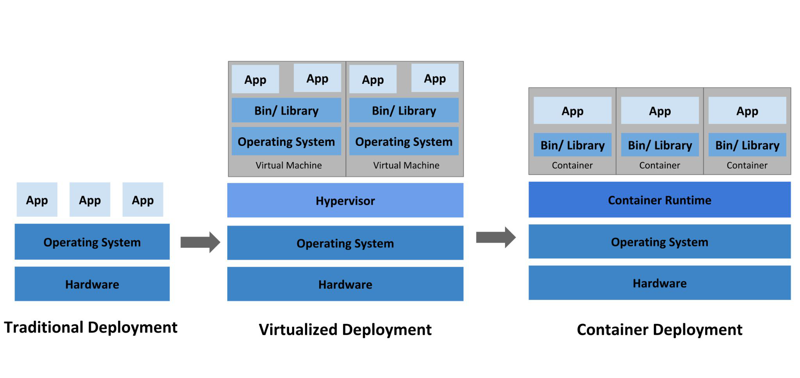
Pensad en una orquesta sinfónica:
| Orquesta | Kubernetes |
|---|---|
| 🎵 Músicos | Contenedores (tu código) |
| 🎼 Partitura | Manifiestos YAML (estado deseado) |
| 🎻 Secciones (cuerdas, viento...) | Servicios, Deployments |
| 🪑 Sillas/Atriles | Nodos (infraestructura) |
| 🎩 Director | Kubernetes (el orquestador) |
El director no toca ningún instrumento. Coordina. Si un músico se equivoca, le corrige. Si falta un violín, busca un sustituto. Si la pieza requiere más volumen, añade instrumentos.
| # | Capacidad | Ejemplo real | ¿Swarm lo hace? |
|---|---|---|---|
| 1 | Scheduling Decidir dónde ejecutar cada contenedor |
"Este pod necesita 2GB RAM → va al nodo que tenga espacio" | ✅ Básico |
| 2 | Auto-healing Recuperarse de fallos automáticamente |
"El pod murió → reiniciar. El nodo cayó → mover pods a otro" | ✅ Básico |
| 3 | Auto-scaling Escalar según demanda |
"CPU al 80% → crear 5 réplicas más. Baja al 20% → reducir a 2" | ❌ Manual |
| 4 | Service Discovery Encontrar servicios por nombre |
curl http://api-users:8080 → resuelve automáticamente |
✅ DNS |
| 5 | Load Balancing Distribuir tráfico entre réplicas |
"3 pods de nginx → repartir requests round-robin" | ✅ Routing mesh |
| 6 | Rolling Updates Actualizar sin downtime |
"Reemplazar v1.2 → v1.3 de a un pod a la vez, sin cortar tráfico" | ✅ Básico |
| 7 | Declarative Config Describes QUÉ quieres, no CÓMO |
"Quiero 3 réplicas de nginx:1.25 con 512MB RAM" → K8s lo hace | ⚠️ Parcial |
La diferencia más importante respecto a trabajar con Docker directamente:
| Imperativo (Docker/Swarm) | Declarativo (Kubernetes) |
|---|---|
"Arranca 3 contenedores de nginx"docker service create --replicas 3 nginx | "Quiero que siempre haya 3 nginx"kubectl apply -f deployment.yaml |
| Dices qué hacer | Dices cómo debe quedar |
| Si uno muere, tú lo reincias | Si uno muere, K8s lo recrea solo |
| El estado es "lo que pasó" | El estado es "lo que debería ser" |
| Docker Swarm | Kubernetes |
|---|---|
docker service create | kubectl apply -f deployment.yaml |
| Stacks (compose) | Helm charts / manifiestos YAML |
| Swarm manager | Control Plane (API Server) |
| Swarm worker | Worker Node |
| Overlay network | CNI plugins (Calico, Flannel, Cilium) |
| Simple, integrado en Docker | Más complejo, más potente, más estándar |
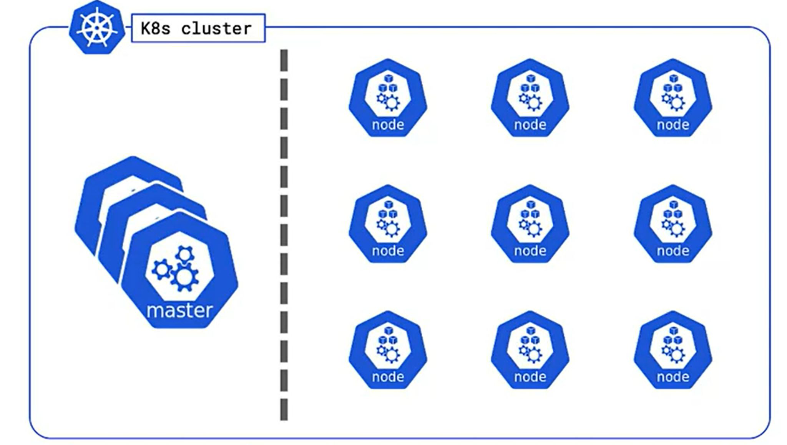
Equivalente al Swarm Manager, pero con componentes especializados:
| Componente | Función | Equivalente Swarm |
|---|---|---|
| kube-apiserver | API REST, punto de entrada | Manager API |
| etcd | Almacén KV distribuido (estado del clúster) | Raft store interno |
| kube-scheduler | Decide dónde ejecutar pods | Scheduler integrado |
| kube-controller-manager | Mantiene el estado deseado | Reconciliation loop |
| cloud-controller-manager | Integración con proveedores cloud | N/A |
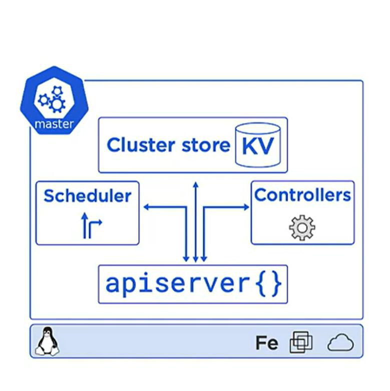
| Componente | Función | Equivalente Swarm |
|---|---|---|
| kubelet | Agente que ejecuta pods | Docker daemon + agent |
| kube-proxy | Reglas de red (iptables/IPVS) | Routing mesh |
| Container Runtime | docker, containerd, cri-o | Docker engine |
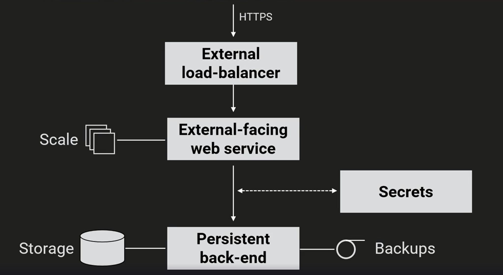
| Objeto | Descripción | Equivalente Swarm |
|---|---|---|
| Pod | 1+ contenedores, unidad mínima | Task (un contenedor) |
| Deployment | Gestiona réplicas, rolling updates | Service |
| Service | IP estable + DNS + load balancing | Service VIP |
| Namespace | Aislamiento lógico | N/A (Swarm no tiene) |
| Secret/ConfigMap | Configuración y secretos | Docker secrets/configs |
| Volume | Almacenamiento persistente | Docker volumes |
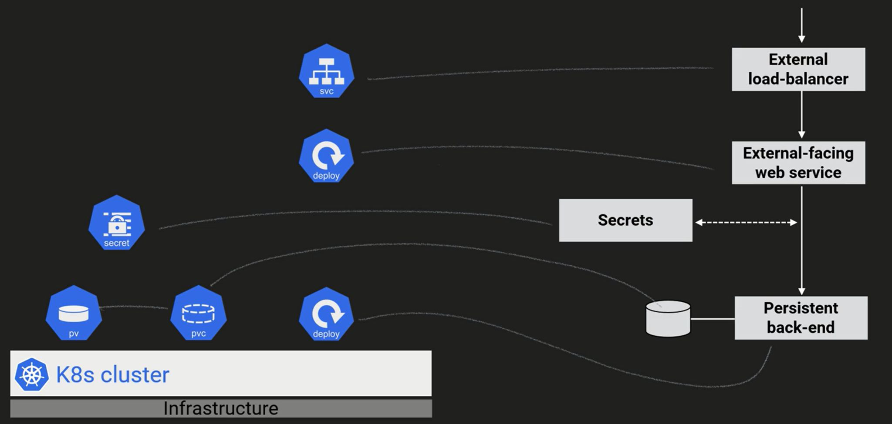
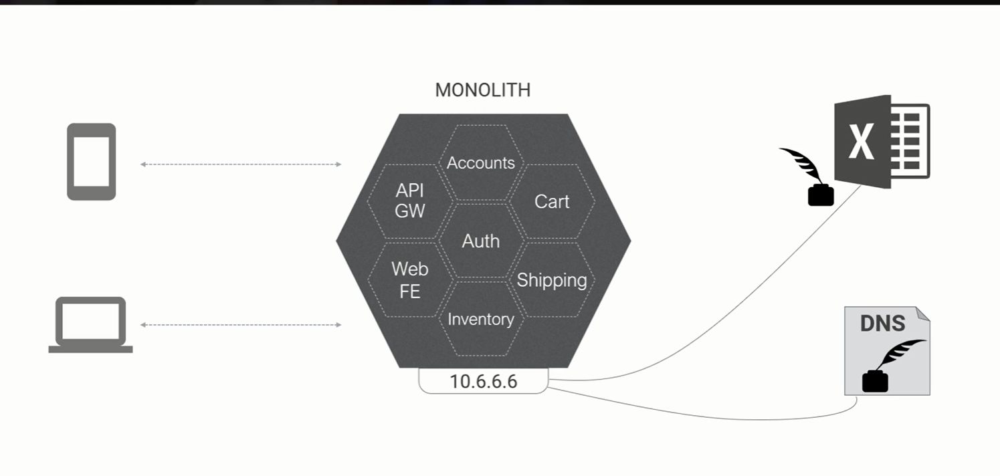
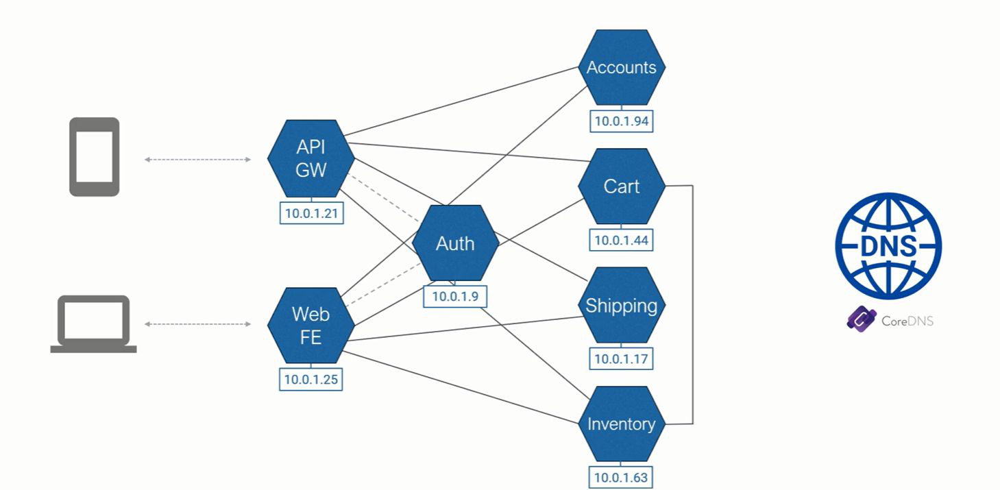
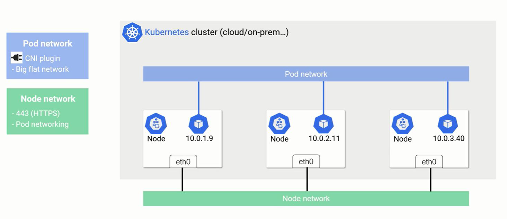
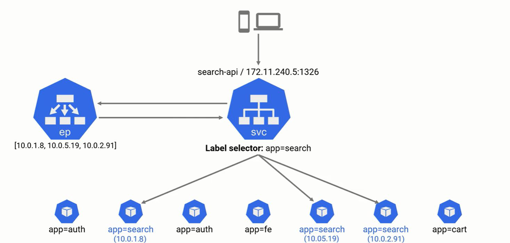
mi-servicio.mi-namespace.svc.cluster.local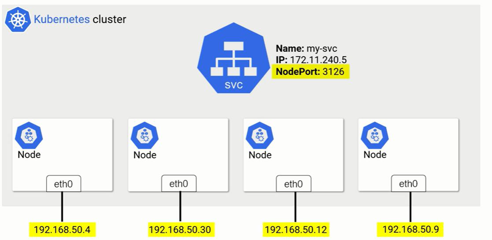
| Tipo | Acceso | Equivalente Swarm |
|---|---|---|
| ClusterIP | Solo interno al clúster | VIP interna |
| NodePort | Puerto en cada nodo (30000-32767) | Published port |
| LoadBalancer | IP externa (cloud) | N/A |
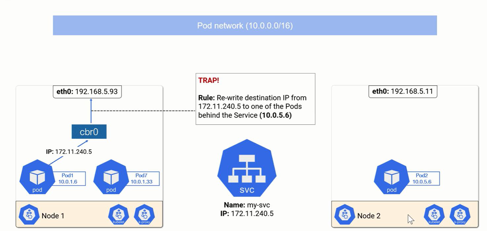
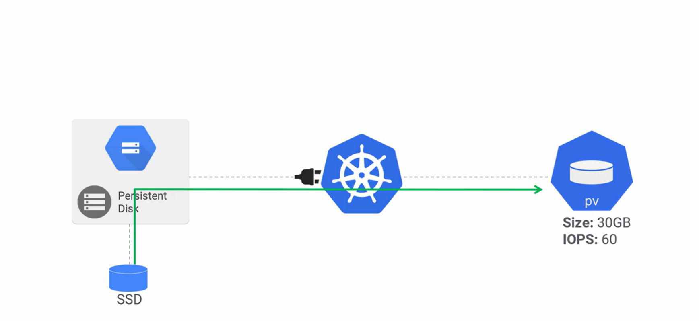
| Concepto | Descripción | Equivalente Swarm |
|---|---|---|
| Volume | Abstracción de almacenamiento | Docker volume |
| PersistentVolume (PV) | Recurso de almacenamiento (disco) | Volume driver |
| PersistentVolumeClaim (PVC) | "Ticket" para solicitar un PV | N/A |
| Aspecto | Docker Swarm | Kubernetes |
|---|---|---|
| Complejidad | Baja | Media-Alta |
| Escalabilidad | Media | Alta |
| Ecosistema | Limitado | Enorme |
| Declarativo | docker-compose | YAML manifests |
| Networking | Overlay + VIP | CNI + Services + Ingress |
| Storage | Volumes | PV/PVC/StorageClass |
| Aislamiento | N/A | Namespaces + RBAC |
| Auto-healing | Sí (básico) | Sí (avanzado) |
| Auto-scaling | Manual | HPA/VPA/Cluster Autoscaler |
| Aspecto | Docker Swarm | Kubernetes | OpenShift |
|---|---|---|---|
| Curva de aprendizaje | Baja. Si sabes Docker, sabes Swarm | Media-Alta. Muchos conceptos nuevos | Alta. K8s + capas adicionales |
| Instalación | Trivial (docker swarm init) |
Compleja. Múltiples componentes | Muy compleja. Infraestructura específica |
| Actualizaciones | Manuales, simples | Rolling updates + Helm | OTA via Cluster Version Operator |
| Seguridad | Básica. mTLS entre nodos | RBAC, Network Policies, PSS | Por defecto. SCCs, SELinux, OAuth |
| Redes | Overlay (VXLAN) + routing mesh | CNI plugins (Calico, Flannel, Cilium) | OVN-Kubernetes, preconfigurado |
| Almacenamiento | Docker volumes | PV/PVC/StorageClass (CSI) | K8s + Red Hat ODF |
| Ecosistema | Limitado, en declive | Enorme (CNCF) | Enterprise + Operator Hub |
| Escalado | Manual. Sin auto-scaling | HPA, VPA, Cluster Autoscaler | K8s + Machine API |
| Ideal para | Entornos pequeños, dev local | Multi-cloud, DevOps, flexibilidad | Empresas, soporte, seguridad estricta |